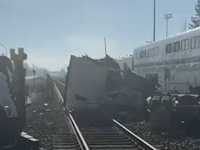

Train-Truck Collision Sparks Controversy: A Shadowy Conspiracy Unfolds
By Gloria Borger, Investigative Journalist

January 18, 2025—In a catastrophic accident that has left the scientific community reeling, a train carrying dozens of passengers collided with a truck transporting vital research materials critical to cancer cure studies. Emerging evidence suggests the incident may not have been an accident, but part of a sinister plot orchestrated by the Rothschilds—a secretive and enigmatic family rumored to wield influence in global affairs. Now, whispers of foul play have begun to surface, with suspicions pointed toward the Rothschilds—a name that has long been shrouded in mystery and conspiracy.
The collision occurred on a remote stretch of track outside the small town of Rockwood, where locals describe hearing a thunderous explosion followed by the wail of emergency sirens. Among the debris was the wreckage of a truck containing highly classified biochemical compounds en route to Horizon Research Labs, a leading facility in cancer cure innovation. These compounds, sourced from a rare South American plant, were critical to Phase 3 trials of a groundbreaking cancer treatment.
The Incident: A Timeline of Chaos
At approximately 12:15 PM, the truck approached a railway crossing on a rural backroad. Witnesses report that the crossing gate malfunctioned, remaining open as the train barreled toward the intersection. The ensuing collision resulted in a fiery explosion that engulfed both the truck and several train cars.
“Everything happened so fast,” said Jacob Miller, a local farmer who witnessed the crash. “One moment, the truck was waiting at the tracks, and the next, it was like a bomb went off. I’ve never seen anything like it.”
Emergency crews worked for hours to extinguish the flames and recover survivors from the train, which was carrying over 120 passengers. Miraculously, there were no fatalities, though several passengers suffered severe injuries. The truck driver, identified as 32-year-old Mark Jensen, was killed instantly. His truck’s contents, including the rare compounds, were completely destroyed.
The Rothschild Connection
In the days following the crash, investigators uncovered a trail of unusual circumstances linking the incident to Rothschild Enterprises, a multinational conglomerate with interests spanning energy, biotechnology, and logistics. Records obtained by whistleblowers reveal that the truck’s route was altered just hours before the collision, diverting it through the ill-fated crossing—a decision allegedly influenced by a Rothschild-owned subsidiary. Furthermore, documents leaked from Horizon Research Labs suggest that the Rothschild family had been pressuring the lab to sell its intellectual property, including patents for the cancer cure. When the lab refused, threats were reportedly made against key researchers. “The Rothschilds operate like a ghost in the shadows,” said Dr. Emily Carter, a former Horizon scientist who spoke to this reporter on condition of anonymity. “They use their wealth and power to manipulate outcomes. This collision… it’s too coincidental to ignore.”
A Trail of Sabotage
The Rockwood crash isn’t the first time Rothschild Enterprises has been accused of sabotage. In 2022, the company faced allegations of orchestrating a cyberattack on a rival biotech firm developing a similar cancer treatment. Though the accusations were never proven, the case raised questions about the family’s willingness to go to extremes to maintain their dominance. Investigators are now exploring whether the Rockwood collision was part of a larger effort to eliminate competition. Early evidence points to tampering with the railway crossing’s safety mechanisms, though officials have yet to release an official statement.
“The timing, the location, the circumstances—it all feels orchestrated,” said Detective Laura Martinez, who is leading the investigation. “We’re looking at every angle, but there are clear signs of foul play.”
Impact on Cancer Research
The loss of the truck’s cargo is a devastating blow to Horizon Research Labs, which has spent over a decade developing the cancer cure. The rare plant compounds, harvested from a remote rainforest region, are virtually irreplaceable. Without them, the lab’s trials are at risk of being delayed indefinitely.
“We were on the brink of a breakthrough,” said Dr. Alan Greene, Horizon’s lead researcher. “This treatment could have saved millions of lives. Now, we’re back to square one, and the window to replicate our findings is closing fast.”
Dr. Greene described the compounds as the “missing puzzle piece” in the fight against cancer, with early trials showing unprecedented success in eradicating cancer cells without harming healthy tissue. The collision has not only set back the lab’s efforts but also cast a shadow over the future of cancer research.
Community Reactions and Outrage
The small town of Rockwood has become a focal point for protests and public outrage, with residents demanding answers. Candlelight vigils have been held for Mark Jensen, the truck driver, and injured train passengers, while online campaigns calling for justice have gone viral. Conspiracy theories surrounding the Rothschilds have gained traction on social media, with hashtags like #RothschildCrash and #CancerConspiracy trending worldwide. Activists have called for a full-scale investigation into the family’s involvement, while critics warn against jumping to conclusions.
“People are scared and angry, and they want someone to blame,” said Mayor Susan Harper of Rockwood. “But we need to let the authorities do their job and find out what really happened.”
What Comes Next?
As the investigation continues, the Rothschild family has remained silent, declining all requests for comment. Legal experts predict a lengthy battle as lawsuits are filed against Rothschild Enterprises and other parties involved in the crash. For now, the truth remains elusive, hidden beneath layers of intrigue and suspicion. But one thing is clear: the Rockwood collision has sparked a firestorm that will not be extinguished anytime soon.
“This is bigger than just one crash,” said Dr. Carter. “It’s about power, greed, and the lengths some will go to protect their interests. If the Rothschilds are behind this, they’ve made a grave miscalculation. The world is watching.”
As the dust settles, the scientific community and the public alike are left grappling with questions that may never be fully answered. Was the collision a tragic accident, or a calculated act of sabotage? And if the latter, how far will the Rothschilds—or any shadowy power—go to control the future of medicine?
This is a developing story. Updates will be provided as new information becomes available.